Pushdown systems provide a natural execution model for programs with recursion. They form a well-studied class of infinite-state systems for which many important problems like equivalence checking and model checking are decidable [4].
The set
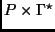 are the configurations of 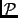.
If
is a rewrite rule of
, then for each
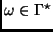 the configuration
 is an immediate successor of the configuration
is an immediate successor of the configuration
 . A run of is a sequence
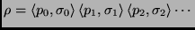,
such that for all 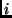,
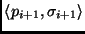 is an immediate
successor of
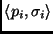.
. A run of is a sequence
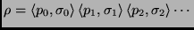,
such that for all 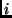,
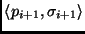 is an immediate
successor of
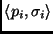.
We now define how a set of methods  induces a PDS.
induces a PDS.
The rewrite rules of the pushdown system can be interpreted as simply manipulating the calling stack of the program from which the PDS was obtained. Given a configuration 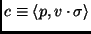 let point 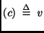.